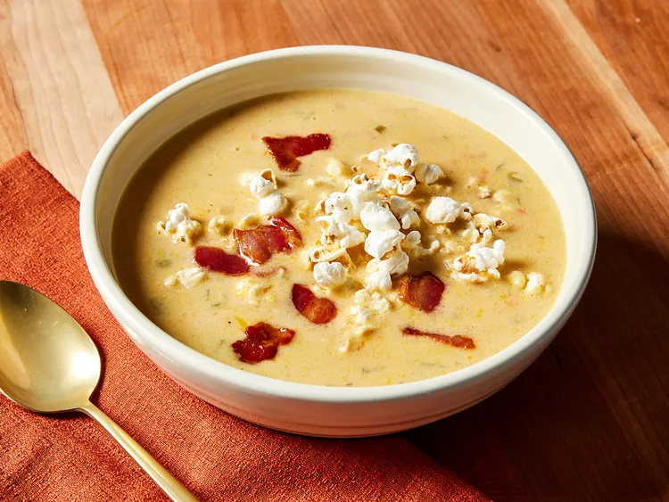

So i hear you can to make some beer soup, yeah?

Beer soup is a soup which is usually roux-based and made with beer.
In medieval Europe, it was served as a breakfast soup, sometimes poured
over bread.
Ingredients
- Bacon: Bacon is optional, but it adds a deep meaty flavor.
- Vegetables: From the vegetable aisle, you’ll need onions, carrots, and celery.
- Seasonings: Season the beer cheese soup with fresh garlic, salt, pepper, cayenne pepper, and dry mustard.
- Butter and flour: Make a roux with equal parts butter and all-purpose flour.
- Beer: It wouldn’t be beer cheese soup without a bottle of beer!
- Broth: Use store-bought or homemade chicken broth.
- Milk: The creamy recipe calls for whole milk, but you can use half-and-half for an even richer soup.
- Sauces and condiments: Dijon mustard, Worcestershire sauce, and hot pepper sauce take the flavor up a notch.
- Cheese: You’ll need about three cups of sharp Cheddar cheese.
- Popcorn: Popped popcorn makes a fun, tasty topping.
Steps
- Cook the bacon (if using), then transfer it to a paper towel-lined plate.
- Cook the vegetables in the drippings (if you’re not using bacon, cook them in oil).
- Make a roux, then stir in the beer. Cook until thick.
- Stir in the broth and milk, then bring to a boil. Reduce to a simmer and continue cooking until thickened.
- Stir in Dijon, Worcestershire, dry mustard, and hot sauce and remove from heat.
- Add the cheese slowly.
- Serve hot and, if you like, topped with popcorn and bacon.